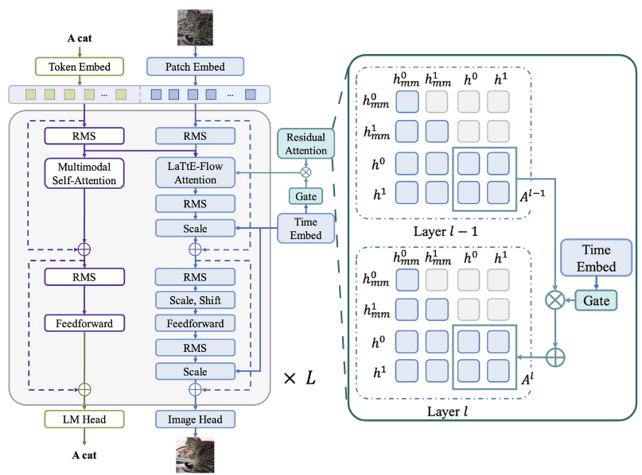
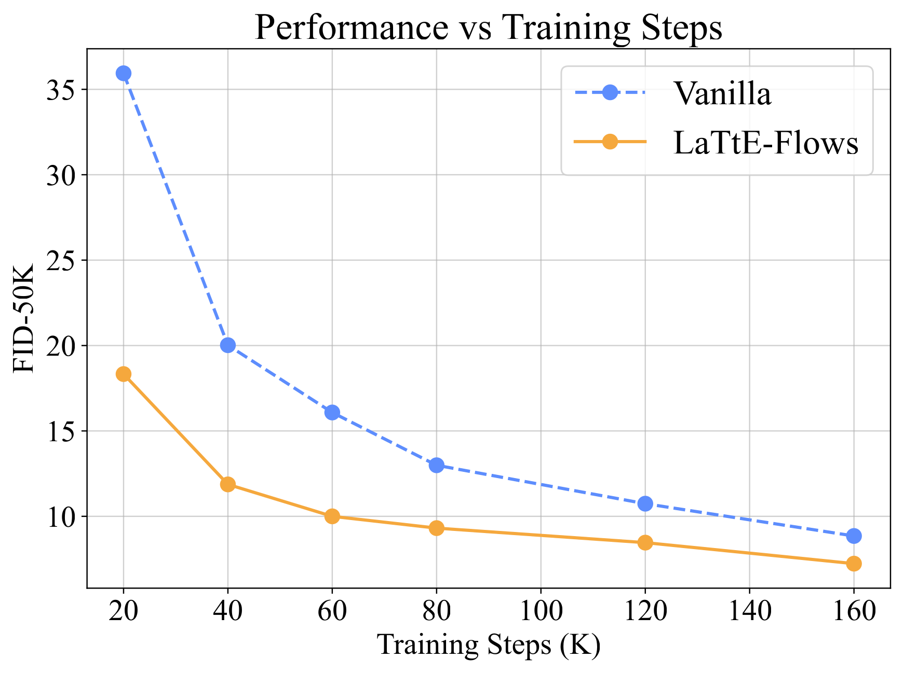
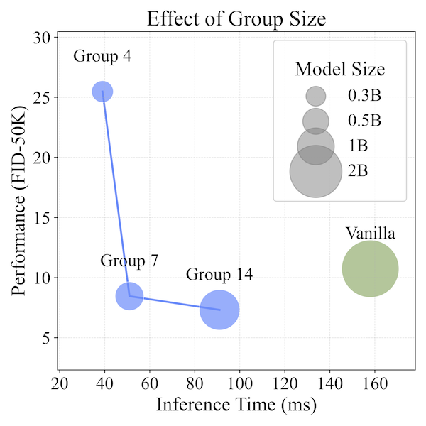
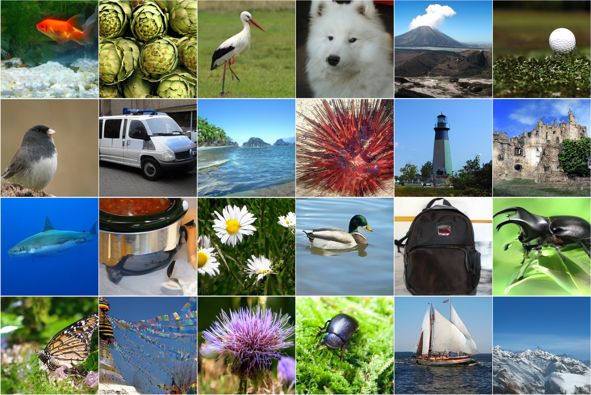

LaTtE-Flow: Layerwise Timestep-Expert Flow-based Transformer
ICML 2026
Abstract
Unified multimodal models that handle both image understanding and generation in a single framework are a promising path toward general-purpose agents. But existing unified models usually need heavy pretraining and generate images slowly, which makes them hard to deploy in real-time or resource-constrained settings.
We introduce Layerwise Timestep-Expert Flow-based Transformer (LaTtE-Flow), an architecture that makes diffusion/flow-based transformers more efficient inside the unified setting. LaTtE-Flow builds on a powerful pretrained vision-language model (VLM) to inherit strong understanding, and extends it with a new Layerwise Timestep Experts design for image generation. It spreads the flow-matching process across groups of transformer layers, where each group handles a distinct subset of timesteps. Because only a small set of layers runs at each step, sampling becomes much cheaper. To push performance further, we add a Timestep-Conditioned Residual Attention mechanism that lets later layers reuse attention computed earlier.
In experiments, LaTtE-Flow keeps strong multimodal understanding while reaching competitive image generation quality with around 6× faster inference than recent unified multimodal models.
Method
LaTtE-Flow keeps the pretrained VLM frozen, so it does not lose any understanding ability, and adds a trainable generation pathway alongside it. Two ideas make that pathway both fast and accurate.
1. Layerwise Timestep Experts
We split the L transformer layers into K non-overlapping groups. Each group is trained to denoise one timestep interval of the flow-matching process. At inference, only the group for the current timestep runs — about L/K layers per step instead of all L.
2. Timestep-Conditioned Residual Attention
A lightweight, head-wise gate lets each layer reuse the image self-attention map from the previous layer, with the amount of reuse controlled by the current timestep. The model refines attention gradually across layers, which speeds up convergence during training and improves quality with no extra inference cost.

Results
LaTtE-Flow is built on Qwen2-VL-2B-Instruct (28 layers) with a DC-AE image encoder, split into K = 4 expert groups of M = 7 layers, and trained on 1.2M ImageNet images at 256×256.
Image Generation — ImageNet-50K
#Params is the number of parameters active per sampling step. Rel. Time is inference time relative to LaTtE-Flow.
| Model | FID ↓ | IS ↑ | Pre ↑ | Rec ↑ | #Params | #Step | Time (s/img) | Rel. Time |
|---|---|---|---|---|---|---|---|---|
| Diffusion models | ||||||||
| ADM | 10.94 | 101.0 | 0.69 | 0.63 | 554M | 250 | 9.677 | 168× |
| DiT-XL/2 | 2.27 | 278.2 | 0.83 | 0.57 | 675M | 250 | 2.592 | 45× |
| Masked models | ||||||||
| MaskGIT | 6.18 | 182.1 | 0.80 | 0.51 | 227M | 8 | 0.029 | 0.5× |
| Autoregressive models | ||||||||
| ViT-VQGAN | 4.17 | 175.1 | — | — | 1.7B | 1024 | 1.382 | 24× |
| RQTransformer | 7.55 | 134.0 | — | — | 3.8B | 68 | 1.210 | 21× |
| Unified models | ||||||||
| Show-o | 31.26 | 98.7 | 0.55 | 0.69 | 1.3B | 50 | 2.493 | 48× |
| Janus Pro | 23.68 | 105.2 | 0.58 | 0.49 | 1.5B | 576 | 0.311 | 6× |
| Vanilla (Ours, baseline) | 6.33 | 192.4 | 0.80 | 0.67 | 2.0B | 40 | 0.158 | 3× |
| LaTtE-Flow (Ours) | 5.79 | 213.1 | 0.78 | 0.69 | 500M | 40 | 0.052 | 1× |
Multimodal Understanding
LaTtE-Flow LaTtE-Flow preserves Qwen2-VL-2B’s strong understanding performance while adding generation capabilities.
| Model | MMBench | SEED | POPE | MM-Vet | MME-P | MMMU | RWQA | TextVQA | #Params |
|---|---|---|---|---|---|---|---|---|---|
| Chameleon | 32.7 | — | 59.8 | 9.7 | 604.5 | 38.8 | 39.2 | 0.0 | 34B |
| EMU3 | 58.5 | 68.2 | 85.2 | 37.2 | 1243.8 | 31.6 | 57.4 | 64.7 | 8B |
| Janus | 69.4 | 63.7 | 87.0 | 34.3 | 1338.0 | 30.5 | — | — | 1.5B |
| Janus Pro | 75.5 | 68.3 | 86.2 | 39.8 | 1444.0 | 36.3 | — | — | 1.5B |
| Qwen2-VL-2B (backbone) | 74.9 | 72.4 | 87.3 | 51.5 | 1501.4 | 41.1 | 60.7 | 79.7 | 2B |
| LaTtE-Flow (Ours) | 74.9 | 72.4 | 87.3 | 51.5 | 1501.4 | 41.1 | 60.7 | 79.7 | 2B |
Ablations


Qualitative Samples

BibTeX
@inproceedings{shen2026latteflow,
title = {LaTtE-Flow: Layerwise Timestep-Expert Flow-based Transformer},
author = {Shen, Ying and Xu, Zhiyang and Chen, Jiuhai and Diao, Shizhe and
Zhang, Jiaxin and Yao, Yuguang and Rimchala, Joy and
Lourentzou, Ismini and Huang, Lifu},
booktitle = {Proceedings of the International Conference on Machine Learning (ICML)},
year = {2026}
}